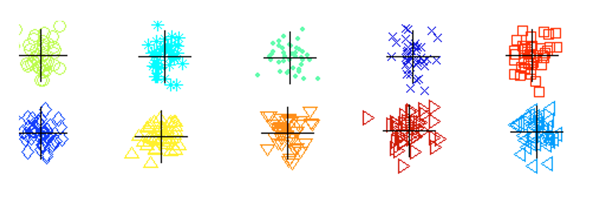
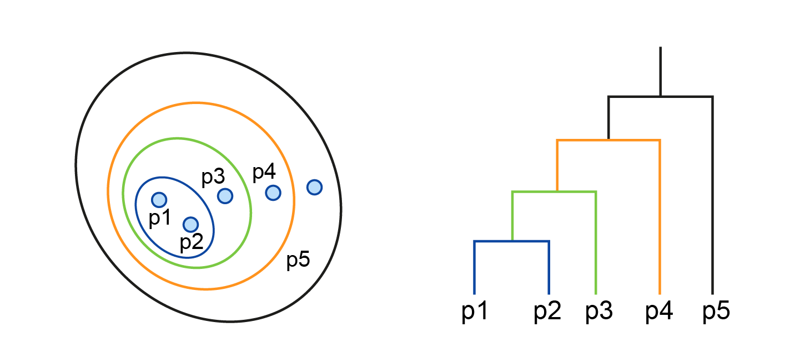
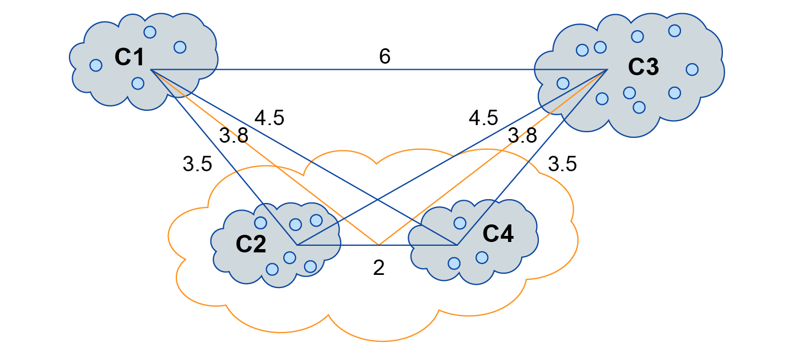
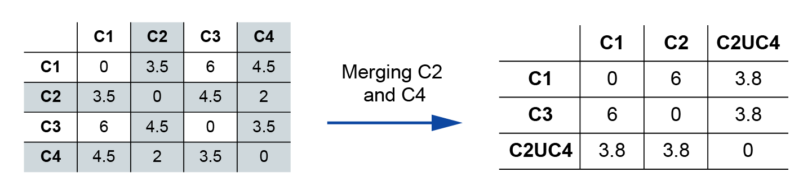

Bisecting K-means algorithm (optional)
Bisecting K-means algorithm takes advantage of the fact that basic 2-means clustering (as per Algorithm 1) is computationally efficient.
Bisecting K-means algorithm makes use of the 2-means algorithm to bisect the dataset \((K-1)\) times to reach K clusters, where K>2. An additional final K-means clustering algorithm can be used to fine-tune the clusters.
The idea is as follows: In order to specify the K centroids, we can employ the idea of bisecting (splitting into 2) the dataset into two clusters. Then we pick a cluster to bisect it in turn. Each time we do the bisection in several trials (to create a set of bisection candidates) with random initial centroids. We then pick the pair of clusters candidates that have the lowest SSEs and we add them to the list of clusters. We keep bisecting each available cluster from the list of clusters by employing 2-means trails until we reach K-clusters. Each time we pick a cluster from the list of clusters to be bisected based on some criterion. A viable criterion is to select the cluster with the highest SSE. The process is repeated until we reach K-cluster.
The set of bisected K-clusters, however, may need refinement because the splitting procedure (by using 2-means algorithm) is done by looking locally at a sub cluster and not at the level of the whole dataset. To refine further the chosen K-clusters, we choose the centroids of the bisected K-clusters as the initial centroids of a final new run of K-means algorithms, which in turn finds us the best K-clusters and their centroids. The algorithm is shown below.
Algorithms 3: Bisecting K-means
Input:
Dataset \(\mathbf{X}=\left\{\mathbf{x}_{1}, \mathbf{x}_{2}, \ldots, \mathbf{x}_{\mathrm{N}}\right\}\)
\(K\): The number of clusters
Trials: number of trials to be performed in each bisection step
Output: Cluster Labels \(\boldsymbol{l}=\left[l_{1}, l_{2}, \ldots, l_{N}\right] \quad l_{n} \in\{1, \ldots, K\}\)
Bisect K-means (X, K, trials):
Initiate a list of clusters \(C L=\left\{\boldsymbol{C}_{1}\right\}\), initially cluster \(\boldsymbol{C}_{1}=\mathbf{X}\) # by assigning \(\boldsymbol{l}=[1,1, \ldots, 1]\)
Repeat
Remove a cluster from the list \(C L\)
For \(i=1\) to trials
Bisect the selected cluster using basic 2-means
Select the two clusters from the bisection set with the lowest total SSE
Add these two clusters to the list of clusters
until the list of clusters contains \(K\) clusters
perform an extra K-means with the initial centroids of the list of clusters for fine-tuning
Return the labels \(\boldsymbol{l}=\left[l_{1}, l_{2}, \ldots, l_{N}\right]\)
Below in figure 3.11, we show results of bisecting K-means on the problem that we mentioned previously in figure 3.10 regarding centroid initialisation. As we can see, the algorithm is less susceptible to this problem.

Agglomerative clustering
You can download the slides shown in the video.
Slides are reproduced from Tan et al (2019), Introduction to Data Mining, with kind permission of the authors.
In partitional clustering techniques, such as the K-means, the clusters are assumed to be partitional, i.e. they are well-separated from each other. If they are not then the algorithm performance will be put under pressure and the results might not be satisfactory. This is one of the intrinsic limitations of such approaches.
Contrary to partitional clustering, hierarchical clustering assumes that the clusters have a clear hierarchy and they are nested one inside the other. This assumption goes well with several natural phenomena and situations. For example, when we are dealing with clusters of cities inside a country which is inside a continent, or when we are dealing with hierarchy in the animal kingdom etc.
There are two types of hierarchical clustering approaches that we can adopt; agglomerative and divisive. Agglomerative techniques start from smaller clusters and build other larger clusters on top of them in a bottom-up approach. Divisive clustering on the other hand, starts with a large cluster that encompasses the entire dataset and works its way towards finer and more refined clusters in a top-down approach. Both agglomerative and divisive clustering have similar if not identical results. Therefore, we will concentrate on agglomerative hierarchical clustering. It should be noted that hierarchical clustering is different than the bisecting clustering. In bisecting clustering we keep partitioning each cluster into two clusters but these are not assumed to be nested. Figure 3.12 below shows an example of agglomerative clustering and its associated dendrogram.

A dendrogram is a tree-like structure that reflects the membership of different data points to the different clusters structure that were discovered in the dataset. Below we show the basic vanilla agglomerative clustering algorithm.
Algorithms 4: Basic agglomerative clustering
Input:
Dataset \(\mathbf{X}=\left\{\mathbf{x}_{1}, \mathbf{x}_{2}, \ldots, \mathbf{x}_{\mathrm{N}}\right\}\)
Output: agglomerative set of clusters \(\boldsymbol{C r}\)
Agglomerative (X,):
\(\boldsymbol{C}_{i}=\left\{\mathbf{x}_{i}\right\} i=1, \ldots, N\) Set all data points as initial clusters inside the agglomerated cluster \(\boldsymbol{C r}=\left\{\boldsymbol{C}_{i}\right\}\)
Compute the proximity matrix elements \(d\left(\boldsymbol{C}_{i}, \boldsymbol{C}_{j}\right) \quad i, j=1, \ldots N\) using a suitable metric ex. Euclidian
Repeat
Pick the two clusters \(\boldsymbol{C}_{i}, \boldsymbol{C}_{j}\) from \(\boldsymbol{C r}\) that have minimum inter-cluster distance \(\min _{i, j} d\left(\boldsymbol{C}_{i}, \boldsymbol{C}_{j}\right)\)
Merge the two clusters into one cluster \(\boldsymbol{C}_{k}=\left\{\boldsymbol{C}_{i} \cup \boldsymbol{C}_{j}\right\}\)
Calculate the distances between new cluster \(\boldsymbol{C}_{k}\) and other clusters (using Centroids, Min, Max, etc.)
Update the column and row of the proximity matrix
Append the resultant cluster to the set of agglomerated clusters \(\boldsymbol{C r}=\left\{\boldsymbol{C r}, \boldsymbol{C}_{k}\right\}\)
until only single a cluster remains in the proximity matrix
Return \(\boldsymbol{C r}\)
The algorithm makes use of the notion of proximity matrix which has rows and columns that correspond to a set of clusters and the distances between them.
Please note that with agglomerative clustering, each data point has a set of ordinal labels that states the clusters that the data point belongs to. This is because, in contrast to partitional clustering, hierarchical clustering allows each data point to belong to several nested clusters, and hence it has several memberships recognised by a set of labels.


We can measure the distances between the clusters via the distances between their centroids or by taking the min or max distances between each two data points from the two clusters. These different ways of calculating the distances between the clusters gives us different results and constitutes a variation of the basic agglomerative clustering algorithm.
Please refer to section 5.3 of Tan et al 2019.
Evaluating clusters via cohesion and separation
Evaluating clusters is an important step towards improving and comparing different clustering algorithms as well as to improve the obtained clusters. Mainly, we can adopt two approaches for cluster evaluation; supervised approach or unsupervised approach.
You can download the slides shown in the video (PPT)here.
Slides are reproduced from Tan et al (2019), Introduction to Data Mining, with kind permission of the authors.
Supervised measures
We can evaluate clusters by utilising class labels if we have them. Please note that we only use those labels for evaluation and not to come up with the clusters. In other words we do not feed the labels to the clustering algorithms, clustering algorithms are all unsupervised learning algorithms so they do not need categorical labels. We can, however, use categorical labels if they are available in order to evaluate the clusters to see whether they correspond well with the labels.
The cross entropy of both the classification and clustering can be used to express the discrepancy between the classification and clustering. We will cover cross entropy in unit 5, it is similar to entropy but goes across different sets.
It should be noted however that even if we have the labels, the formed clusters might have used intrinsic data properties that have not been used when the classes of the data were obtained, hence the lack of correspondence does not necessarily mean that the clusters are not good.
Unsupervised measures
Another approach is to evaluate the cluster via their intrinsic properties. In particular we can simply use the SSE in order to evaluate the cluster cohesion.
Cohesion expresses the idea that the more the data points are closer to each other the more cohesive the clusters is.
Another criterion that we can use is how well the clusters are separated from each other. The inter-clusters separation can be measured via the following formula:
where C corresponds to the centroid of the entire dataset. \(\mathbf{C}_{i}\) is the centroid for clusters \(i\) and \(\left|\boldsymbol{C}_{i}\right|\) is the number of data points in clusters \(i\).
Finally clusters validity can be measured via the correlation, by comparing between ideal similarity matrix and the proximity matrix. Please refer to section 5.3 of Tan et al 2019 and see video3 for a summary of the above concepts.
Exercise
See the following Jupyter Notebook exercise for two types of clustering: partitional and hierarchical.
- Download exercise (.ipynb): Exercise 4